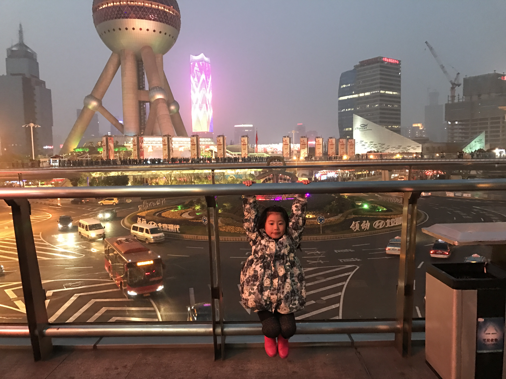
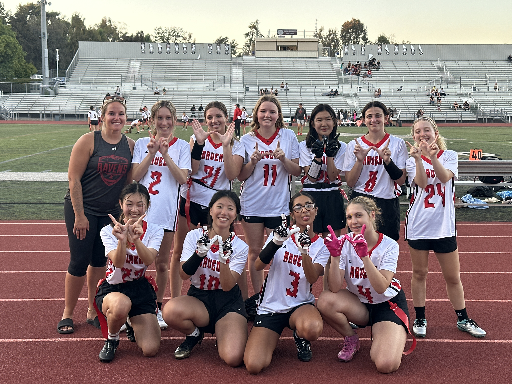

My name is Selina Zeng, and I am currently a sophomore at Canyon Crest Academy. I was born in Hong Kong on October 30, 2010, and I spent about eleven years of my life living in Shanghai where I lived with my parents and my older brother, who is ten years older than me until he graduated high school. While I was in Shanghai, I attended an international private school called FDIS. However, during the summer before 8th grade, my family moved to San Diego, and I attended PTMS for my final year of middle school. Although moving here was a surprising turning point in my life, I am glad it happened because it allowed me to start fresh, make new friends, and experience many cultural shocks and interesting encounters with people over the past three years. Canyon Crest Academy, my current high school
I enjoy participating in several activities such as flag football, beach and indoor volleyball, and playing the violin. I first started playing the violin when I was around five years old, but I did not take it very seriously until I moved to San Diego. After arriving, I joined a volunteer symphony as well as the PTMS orchestra where I had the opportunity to play music and meet other people who share the same interest as none of this was offered back in my old school in Shanghai. When I first moved here, I also started trying new sports. At first, I planned to play indoor volleyball after several people invited me to join, but because I completely missed the clearance date freshman year, I ended up playing beach volleyball instead, which I did not enjoy at all. However, during PE in the fall semester, my PE teacher told me the flag football coach wanted me to attend tryouts after playing it during class. So this fall term, I finished the clearance on time and joined the team where I had tons of fun and met a bunch of new people. The symphony I go to (SDYS) One of the main reasons I am taking AP Computer Science Principles is because I am very interested in astrophysics and theoretical physics. In the future, I hope to study one of these fields as my college major. I believe that learning about computer science will help me better understand complex scientific problems and develop important problem-solving skills. By taking this class, I hope to gain a stronger foundation in technology and computing that will support my future goals in science
Dream Institute
One of the main reasons I am taking AP Computer Science Principles is because I am very interested in astrophysics and theoretical physics. In the future, I hope to study one of these fields as my college major. I believe that learning about computer science will help me better understand complex scientific problems and develop important problem-solving skills. By taking this class, I hope to gain a stronger foundation in technology and computing that will support my future goals in science
Dream Institute